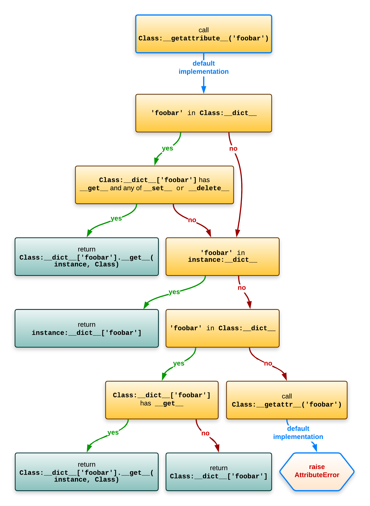

Descriptor¶
What is descriptor¶
Descriptor is a instance of class with certain methods. There are two kind of descriptor.
non-data descriptor: Only
__get__is defined in class.data descriptor:
__get__and one of__set__or__del__is defined in class.
Object attribute lookup¶
Class.__dict__ is not a real dict but a special dict proxy that will also look in all the base classes.
For clarity I’ve simplified things to Class.__dict__[‘foobar’] but in reality the __dict__ proxy object is not used, but instead all the logic is inlined: attributes are looked up on the class of the object in the order of the __mro__ via typeobject.c:_PyType_Lookup (called from object.c: _PyObject_GenericGetAttrWithDict).
When you need descriptor¶
Based on above lookup figure, if you need extra operation when you do obj.attr, you could use descriptor.
How to write a descriptor¶
# lazy_properties.py
import time
class LazyProperty:
def __init__(self, function):
print("init")
self.function = function
self.name = function.__name__
def __get__(self, obj, type=None) -> object:
print("__get__")
print(obj)
obj.__dict__[self.name] = self.function(obj)
return obj.__dict__[self.name]
class DeepThought:
@LazyProperty
def meaning_of_life(self):
print("func")
time.sleep(3)
return 42
# Output
# init
>>> my_deep_thought_instance = DeepThought()
>>> print(my_deep_thought_instance.meaning_of_life)
# Output
# __get__
# <__main__.DeepThought object at 0x7f917bc07220>
# func
# 42 (print out after 3 seconds)
>>> print(my_deep_thought_instance.meaning_of_life)
# 42 (immediatelly)
>>> print(my_deep_thought_instance.meaning_of_life)
# 42 (immediatelly)
Decorator is just a syntax suger. LazyProperty get a function and return a object. It could be translated to:
...
class DeepThought:
def meaning_of_life(self):
print("func")
time.sleep(3)
return 42
meaning_of_life = LazyProperty(meaning_of_life)
# This is run in class definition.
# This is why "init" was print out immediately after class definition.
...
- The things we keep in mind is a order of lookup attribute:
First, you’ll get the result returned from the
__get__method of the data descriptor named after the attribute you’re looking for.If that fails, then you’ll get the value of your object’s
__dict__for the key named after the attribute you’re looking for. This is trying to get value from instance attribute, aka by.operation.If that fails, then you’ll get the result returned from the
__get__method of the non-data descriptor named after the attribute you’re looking for.
Most tricky part is in code below:
def __get__(self, obj, type=None) -> object:
print("get")
print(obj)
obj.__dict__[self.name] = self.function(obj)
return obj.__dict__[self.name]
At the beginning, obj’s __dict__ doesn’t have meaning_of_life. However, meaning_of_life is a non-data descriptor, so __get__ is invoked. After first run, inside __get__, __dict__ is modified and meaning_of_life is added to __dict__. So next time when lookup meaning_of_life by .meaning_of_life, __dict__ has higher priority than non-data descriptor, it will get the result from cached __dict__ directly instead of invode __get__ again.
Note
When you implement the protocol, keep these things in mind:
selfis the instance of the descriptor you’re writing,meaning_of_lifehere, also it’s a class attribute.
objis the instance of the object your descriptor is attached to,my_deep_thought_instancehere.
Caution
__dict__ only have instance attributes not class attributes, see dir vs __dict__.